myOSNext
# The Plain Text Issue
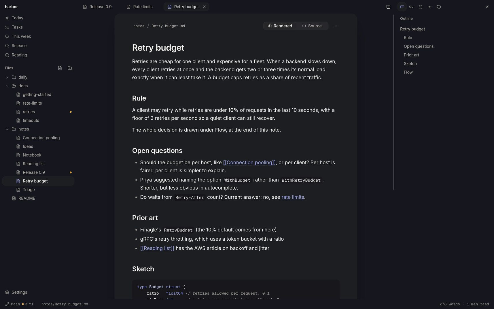
03A Line Is a Task Checkbox lines, anywhere
04One Line of Query Views, in four places
06Your Files Stay Yours Saves that check first
18The Capabilities Photographed, light and dark
- [ ] Read this issue 📅 2026-12-01 #plain-text
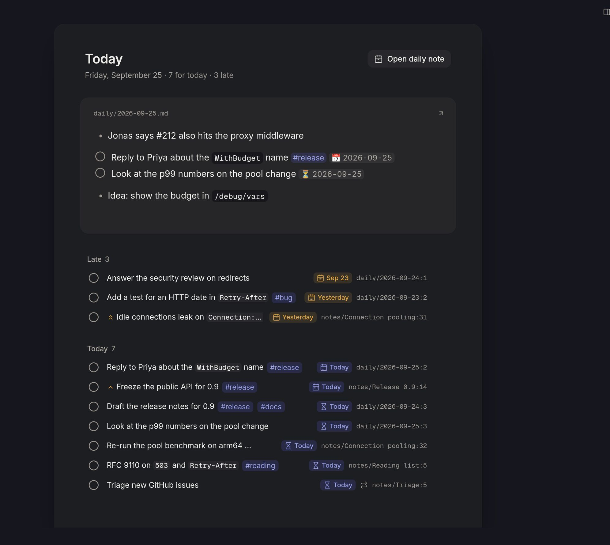
TodayFriday, 25 September. The daily note on top, and below it what is late and what is due, gathered from the whole folder.
ContentsIssue 04 · Winter 2026
## In this issue
- 04LetterA Folder, Opened as It IsSet as the Markdown file it was written in.
- 07Cover storyThe Folder Is the ProductWhy a directory of Markdown files is the right home for notes and tasks.
- 10TasksA Line Is a TaskA task is a checkbox line in any note, and every edit touches that line only.
- 15ViewsOne Line of QueryA search written as one line of text, in four places.
- 18The daily noteWhere Things LandA file named for today, where captured lines go.
- 23SafetyYour Files Stay YoursHow saves are checked, what is kept, and when the network is used.
- 26KeyboardHands on the KeysFiles, commands, source mode, Vim keys, tabs, and splits.
- 31DesignA Sheet on a Tinted TableOne raised page, two thin columns, and a monospace for facts.
- 35TerminalFrom the PromptWhat each myos-next subcommand does, and what it prints.
39The Capabilities
- 01Folder40
- 02Notes & links41
- 03Tasks as lines42
- 04Today43
- 05Tasks screen44
- 06Views46
- 07View blocks47
- 08Capture48
- 09Source & Vim50
- 10Properties52
- 11Backlinks53
- 12Switcher & command bar54
- 13Split & tabs55
- 14Git changes56
- 15History57
- 16Conflicts & safety58
- 17Focus59
- 18Terminal60
62Quick reference
65Colophon
Always trueFrom the product model
Three sentences
every feature has to pass.
- 1Plain Markdown in, plain Markdown out. Untouched text is never reformatted.
- 2No account, no telemetry, no bundled AI. The network is used only when you click Pull or Push.
- 3The folder works the same in any other editor, in Obsidian, and in Git.
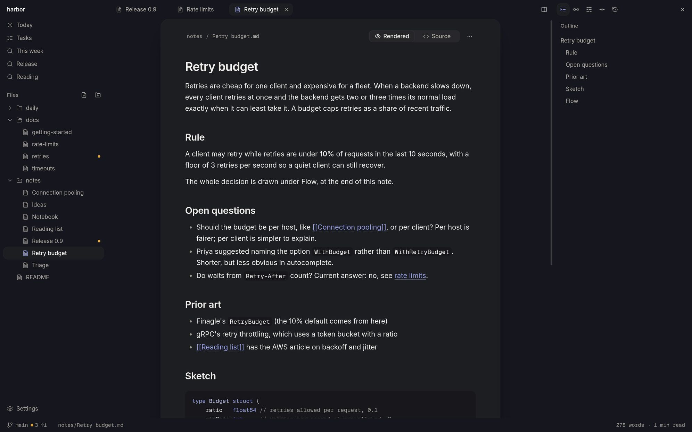
02The whole window, dark theme: the folder on the left, the note on its sheet, the Outline on the right, and the status bar along the bottom.
02Cover story
#The Folder Is the Product
Why a directory of Markdown files is the right home for a developer’s notes and tasks, and what an editor built around that idea chooses to do, and not do.
A database would have made some things easier. It would also have made the folder a copy of the truth instead of the truth.
Open a terminal and type ls in the place where you keep your notes. What comes back is the whole of the data model. There are folders, and inside them there are files ending in .md. Some have a block of YAML at the top. Some have checkbox lines. Some link to each other with [[double brackets]]. That listing is everything myOS Next knows about, and everything it needs.
The product documentation puts it in one sentence: myOS Next “opens the folder as it is.” It needs no special layout, no special fields, and no account. It reads Markdown, and when it writes, it writes Markdown. Nothing else is stored in the folder. Settings, the list of saved views, and the local copies of files it keeps for safety live in the app’s own data folder: ~/.config/myOS Next on Linux, ~/Library/Application Support/myOS Next on macOS.
Why plain files
The case for plain files is not new, but it is worth stating in terms a developer will recognize.
Plain files are durable. A Markdown file does not depend on a server, a sync service, or a database format to be read.
Plain files are portable. The same folder can be opened in Vim, in VS Code, in Obsidian, and in myOS Next, on the same afternoon. Each tool sees the same bytes.
Plain files work with the tools you already use. grep finds things in them. git diff shows exactly what changed. A shell script can append a line to one. A code review can include one.
Plain files are already where the work is. A project’s docs/ folder, a vault of meeting notes, a TODO.md at the top of a repository: the notes and tasks already exist. An app that requires moving them into its own structure asks you to maintain two copies, or to give up the one you had.
The decision record behind myOS Next states the context directly: developers and power users “already keep Markdown in folders, repos, and Obsidian vaults,” and typed one-file-per-task storage and derived folder layouts “get in their way.” The chosen approach, in its words, “works on existing vaults and repos with zero migration and interoperates with Obsidian and Git.” Two alternatives were considered and set aside: keeping a typed model, which imposes structure, and a database index, which “breaks plain-file ownership.”
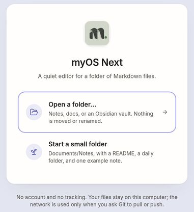
What the app does
The window has three columns. On the left, the folder’s real folders and files, with Today, Tasks, and any pinned views above them. In the middle, the note, centered on a raised page. On the right, a panel with the note’s Outline, Backlinks, Properties, Changes, and History. Both side columns fold away. A status bar along the bottom shows the branch, the number of changed files, the note’s word count, and whether it is saved.
Within that frame, the app does a short list of things:
- Shows files as they are. Create, rename, move, and delete files and folders in the app or anywhere else. The file watcher picks up changes on disk, and the sidebar updates.
- Finds tasks in any note. A checkbox line such as
- [ ] Fix the login redirect 📅 2026-10-02 #authis a task, wherever it sits. The dates use the syntax of the Obsidian Tasks plugin; a plaindue:2026-10-02works too. - Collects what is due. Today shows today’s daily note, and below it the tasks that are due, scheduled, or starting today, plus anything late. Tasks lists every open task in the folder.
- Runs views. A view is a search written as one line of text, such as
open due<=today #work group:file. It can be saved to the sidebar or placed inside a note as aviewblock whose results update as files change. - Captures. ⌘N, or
myos-next add "…"in a terminal, adds one line to today’s daily note. - Works with Git. If the folder is in a Git repository, the app shows changed files, commits with a message, shows a file’s history with diffs, and pulls or pushes when you click.
- Keeps edits safe. Saves check that the file has not changed on disk since it was loaded. Editing one block never rewrites the rest of the file. A local copy is kept before saves.
- Exports. PDF, HTML, or a copy as Markdown or rich text.
Frontmatter is optional. When a note has it, every key shows as an editable property. Changing a property rewrites only that key’s lines; key order, quoting, list style, and comments stay as they were. Frontmatter that is not valid YAML is left untouched.
What it deliberately does not do
The list of things left out is as considered as the list of features.
It does not impose a structure. There is no required folder for projects, no inbox directory, no file per task. New files go where you create them. The daily notes folder and file name pattern are settings, and when the folder is an Obsidian vault with daily notes configured, those settings are used.
It does not add metadata you did not ask for. Opening a note never changes it. The title shown above a note comes from its frontmatter title or its file name; nothing is written to the file to make a title. The lines the app does write, such as the completion date on a checked task, are documented, and they are the same lines the Obsidian Tasks plugin writes.
It does not reformat your text. If you edit one paragraph, the other paragraphs, tables, and lists are saved exactly as they were typed. A file with Windows line endings keeps them.
It does not use the network, except when you click Pull or Push. There is no account, no sync service, no telemetry, and no bundled AI.
It does not replace your other tools. Show in file manager puts any note in front of the programs you already use, and a terminal command runs the same queries as the app.
The promise, in practice
That last sentence is listed in the product documentation under “Always true,” and it is the test every feature has to pass.
In any other editor, the files are Markdown with no hidden fields. A task is a line you can edit by hand. A view block is a
The promise is narrow on purpose: the folder works the same in any other editor, in Obsidian, and in Git.
fenced code block named view; other editors show it as a line or two of query text.
In Obsidian, the task syntax is the Obsidian Tasks syntax, so dates, priorities, repeats, and completion markers mean the same thing in both. [[Links]] resolve by path, then file name, then title. Daily notes follow .obsidian/daily-notes.json. The first-run screen says it plainly when it finds a vault: “Obsidian vault found. Daily notes and links will work the same.”
In Git, every change the app makes is a change to a text file, which shows up in git status and reads cleanly in a diff. When the open folder is a subfolder of a repository, such as a project’s docs/, the Changes panel lists only files inside that folder and leaves the rest of the repository alone.
It all comes from one choice: the folder is the data, and every Markdown file in it is a note. The rest of this issue follows from that.
03Tasks
#A Line Is a Task
In myOS Next a task is a checkbox line in any note. Everything the app does to it is a precise edit to that one line.
There is no task database. The task is the line, and the line lives where you wrote it.
Here is a task:
- [ ] Fix the login redirect 📅 2026-10-02 #auth
It is a Markdown list item with a checkbox, some text, a due date, and a tag. It can sit in a meeting note, a project plan, a daily note, or a TODO.md at the root of a repository. It can be indented under another item. It can start with * or 1. instead of -. The only place it does not count is inside a fenced code block, where it is example text.
myOS Next reads every such line in the folder and treats it as a task. There is no task database and no separate task file. The task is the line, and the line lives where you wrote it.
The date tokens
The app reads the syntax of the Obsidian Tasks plugin, so a folder behaves the same in both. Dates are written YYYY-MM-DD after an emoji:
- [ ] Fix the login redirect ⏫ 🔁 every week 🛫 2026-09-28 ⏳ 2026-09-30 📅 2026-10-02 #auth
* [x] Write the test ✅ 2026-09-25
1. [ ] Call Sam due:2026-10-02
- [-] Dropped idea
📅 is due, ⏳ is scheduled, 🛫 is start, and ✅ is the date it was done. 🔁 introduces a repeat rule. Five emoji set priority, from 🔺 highest to ⏬ lowest. For people who would rather not type emoji, a plain due:2026-10-02 works as a due date.
The checkbox itself has three states that matter. [ ] is open, [x] is done, and [-] is cancelled. Any other character in the box also counts as open, so custom markers from other tools do not break anything.
Completing a task
When you check a task off, in the note, on the Today screen, in the Tasks list, or in a view, the app makes one edit to one line. [ ] becomes [x], and ✅ with today’s date is
added at the end. If the line ends in a block id such as ^a1b2, the date goes before it.
- [x] Fix the login redirect 📅 2026-10-02 #auth ✅ 2026-09-29
Unchecking reverses it: [x] becomes [ ] and the ✅ date is removed. Nothing else in the file moves.
Repeating
A repeating task is where most task tools start rewriting things. Here the rule is the same one Obsidian Tasks follows. When you check off a task with a 🔁 rule, the checked line stays where it is as a record, and a new unchecked copy is written on the line directly above it, with each date moved forward by one step of the rule.
Before, checked on 29 September:
- [ ] Review open pull requests 🔁 every week 📅 2026-09-28 #team
After:
- [ ] Review open pull requests 🔁 every week 📅 2026-10-05 #team
- [x] Review open pull requests 🔁 every week 📅 2026-09-28 #team ✅ 2026-09-29
The step is counted from the due date, or the scheduled date if there is no due date, or the start date if there is neither. Every date on the line moves by that same step, so a task that starts two days before it is due still does. A rule ending in when done counts from the day it was checked instead. The new copy has no ✅ date and no block id. A repeating task with no dates at all repeats without dates.
The rules read like speech: every day, every weekday, every 2 weeks, every week on Tuesday, every month on the 15th, every year.
Rescheduling
Setting a date is also a one-line edit. If the token is already there, only the date changes. If it is not, a new token is added before the ✅ date, which is the order Obsidian Tasks writes. A plain due: stays plain: moving - [ ] Call Sam due:2026-10-02 to the fifth gives - [ ] Call Sam due:2026-10-05, and no emoji appears.
In any task list, a task row has a menu with Due date and Scheduled date, each offering Today, Tomorrow, Next week (the coming Monday), and Pick a date…, plus Clear when the task already has that date. From the keyboard, a focused row takes d for the due date, s for scheduled, t to add a tag, and x or Space to check it off. j and k move between rows. Enter opens the note at that line; ⌘Enter opens it to the side.
Adding a tag puts #tag at the end of the task’s text, before any dates or repeat, and leaves every other character as it was.
Why edits are checked
Each of these edits carries the exact text of the line as the app last read it, along with its line number. Before writing, the app checks that the line still reads that way. If you edited the file in another editor a moment ago, or a git pull moved things around, the check fails, nothing is written, and the app says so. A stale edit never lands on the wrong line. When an edit does go through, a short confirmation such as “Done · Fix the login redirect” offers Undo, and undo restores the file exactly.
Files with type: todo
Some folders keep one file per task, with frontmatter like this:
---
type: todo
status: pending
due: 2026-10-01
---
myOS Next counts those files as tasks too. The file is done when status: done. Checking it off writes status: done and a completedDate; unchecking writes status: pending. Its dates come from due, scheduled, and start. Only those frontmatter lines change.
A task written in the middle of a meeting note should stay in the meeting note.
Why not one file per task
It is a fair question, since some tools work that way and the app supports it. The answer is about where tasks come from. A developer’s tasks show up in the middle of other writing: a follow-up in meeting notes, a loose end in a design doc, a reminder in today’s log. Moving each one into its own file separates it from the reason it exists. It also fills the folder with small files that are awkward to read in any other editor.
A checkbox line keeps the task next to its context. It reads as a list in every Markdown viewer. It diffs as one line in Git. And because the syntax is shared with Obsidian Tasks, the same line works in both apps without translation.
The decision record behind the app puts the choice plainly: “tasks are checkbox lines anywhere (Obsidian Tasks compatible),” and “type: todo files still count as tasks.” One model for new work, and room for the files you already have.
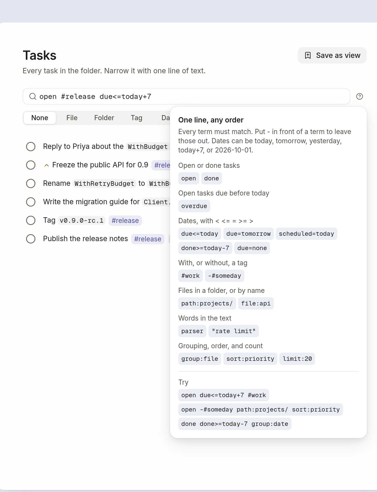
04The Tasks screen with the query bar’s help open. The whole language fits in one popover.
04Views
#One Line of Query
A view in myOS Next is a search written as a single line of text. The same line runs on the Tasks screen, in the sidebar, inside a note, and in the terminal.
Terms are combined with AND. There is no nesting, no parentheses, and no OR. The whole language fits in one table.
Many task apps give you a set of fixed lists: inbox, today, upcoming, someday. myOS Next gives you two screens, Today and Tasks, and a way to write any other list yourself. That way is a view: one line of text, such as
open due<=today #work group:file
Read it left to right. Open tasks, due today or earlier, tagged #work, grouped by the file they live in. Terms are combined with AND. A - in front of a filter negates it. There is no nesting, no parentheses, and no OR. The whole language fits in a table, and it is printed in the box at the end of this article.
The terms
Status. open and done match open or done tasks. overdue matches open tasks with a due date before today.
Dates. Any of the four task dates can be compared: due, scheduled, start, and done. The operators are <, <=, =, >=, and >. The right-hand side can be today, tomorrow, yesterday, an offset such as today+7 or today-7, or a date like 2026-10-01. due=none finds tasks with no due date.
Tags. #release matches tasks or notes with that tag, and nested tags below it: #work also finds #work/api. -#someday leaves them out.
Places. path:notes/ matches files whose path starts with notes/. file:api matches files whose name contains api.
Words. Anything else is text to look for. In a task view it matches the task’s text; in a notes view it matches a note’s title and body. A phrase in quotes is searched as a phrase.
Options. sort:due, sort:priority, or sort:file order tasks (the default is due). Notes sort by file, title, or modified. group:file, group:folder, group:tag, and group:date split the results into sections. limit:20 caps the count.
When a term cannot be used, it is left out and the view says why in one sentence, for example that a term “works in task views only,” or “needs a date such as today, tomorrow, or 2026-10-01.” The rest of the view still runs.
Some real examples
The week ahead, by day:
open due<=today+7 group:date
Grouping by date puts late tasks first under “Overdue,” then each date in order, with “Today” and “Tomorrow” named, and undated tasks last.
Everything in a project’s docs folder that has no date yet:
open path:docs/ due=none
What got done last week, for a status update:
done done>=today-7 sort:file
High-priority work that is not blocked on someone else:
open sort:priority -#waiting limit:10
Tasks that mention the parser, anywhere:
open parser
A view lists tasks unless it asks for notes. In a note or at the terminal, kind:notes does that. The ten most recently changed meeting notes:
kind:notes #meeting sort:modified limit:10
The Tasks screen
The Tasks screen is the plainest place to write a view. It starts with open, which lists every open task in the folder. Type in the query bar to narrow it. Each result is a task row you can check off, reschedule, tag, or open at its line. When a query is worth keeping, save it.
Saved and pinned views
Save as view asks for a name, such as “Release week,” and pins the view to the sidebar, below Today and Tasks. The view is stored in the app’s settings, not in your folder, so saving and removing views never changes a file. Remove, on the view’s own screen, shows a confirmation with Undo, which puts the view back in the same place.
Views inside a note
A view can also live in a note, as a fenced code block named view. The query can follow the block’s name, fill the lines inside, or both. It lists tasks unless the query includes kind:notes:
```view
open due<=today+7 #work
group:file
```
```view kind:notes #meeting sort:modified limit:10
```
In the app, the block shows live results that update as files change. The header shows the query in monospace and a count, and an Open as view button opens it as a full view. Checking a task inside the block writes to that task’s own file, not to the note the block sits in.
In any other editor, and in Obsidian, the block is a fenced code block with a line or two of text. Nothing breaks, and nothing is hidden. This is the difference between a view block and an embedded database: the note holds the question, not a copy of the answer.
A project page might hold a short paragraph of context, a list of links, and a view block with open path:. group:file. Inside a block, path:. means the note’s own folder, path:./drafts/ and path:../ are read from there, and file:this is the note itself, so the block keeps working when the folder is moved or renamed. As tasks are added in meeting notes and daily notes under that folder, the page shows them without anyone editing it.
The same query in the terminal
Because the query engine is shared code, the command line runs the same language:
myos-next tasks "open #release due<=today+7"
It prints one task per line, with its dates and its path:line, grouped when the query asks for groups. The terminal article later in this issue has the details.
The decision record behind the app names this as a consequence of the folder-first approach: “a small query engine is shared by app, fenced blocks, and CLI.” One syntax to learn, in four places.
05The daily note
#Where Things Land
The daily note is the one fixed place in myOS Next: a file named for today, where every captured line goes unless you say otherwise.
A day on which you wrote nothing leaves no empty file behind.
A folder of notes needs somewhere for loose things to go: a thought in a meeting, a reminder to call someone, a bug noticed while reading a log.
myOS Next answers with the daily note: a file named for the date, daily/2026-09-25.md by default. It is the default target for captures, and the top of the Today screen. It is an ordinary Markdown file. You can open it in any editor, grep it, commit it, or delete it.
Made when it is needed
Today’s note does not exist until something is written to it. Opening the app on a new morning creates nothing. The Today screen shows the note’s path in small monospace type above an empty editor with the placeholder “Write about today, or press / for blocks”. The file appears on disk with your first keystroke or your first capture, and not before.
In a folder you share with Git, a day on which you wrote nothing leaves no empty file to commit or clean up.
Obsidian’s settings, respected
Many people who keep a folder of Markdown already keep daily notes in Obsidian, with their own folder and file name format. myOS Next reads those settings. When the open folder has .obsidian/daily-notes.json, its folder and format are used, unless you change them in myOS Next’s Settings. Your changes are stored in the app’s own settings file; the Obsidian file is only read.
The name pattern uses the same tokens Obsidian uses: YYYY, YY, MMMM, MMM, MM, M, DD, D, Do, dddd, and ddd. Text in [brackets] is kept as written. Slashes make subfolders, so YYYY/MM/YYYY-MM-DD files each day under its year and month. A pattern like YYYY-MM-DD [Log] gives 2026-09-25 Log.md.
The Today screen
Today puts the daily note on top, editable in place, with a button to open it in its own tab. Below it are the tasks for today, drawn from the whole folder: a “Late” section for open tasks whose due date has passed, and a “Today” section for tasks due today, scheduled for today or earlier, or starting today. The header gives the date and a short count, such as “3 for today · 1 late.” When nothing is due, it says so, “Nothing is due today”, and offers a button to capture a task.
Checking a task off here writes [x] and the ✅ date in the task’s own file, which may be a meeting note from last week. The daily note is where you write; the task list is where you see what is owed.
Capture from the app
Press ⌘N anywhere in the app. A single field opens, with the example “Ship the parser fix tomorrow #release” as its placeholder. Below the field, the app shows where the line will go and, in monospace, the exact line it will write. Enter adds it and closes the field. Shift-Enter adds it and keeps the field open for the next one. A confirmation names the file, “Added to daily/2026-09-25.md,” with Undo.
The rules for turning text into a line are short. Plain text becomes a list item:
| Typed | Written |
|---|---|
Read the RFC |
- Read the RFC |
Text that starts with [ ], contains a date, a repeat, or a ! becomes a task, in the Obsidian Tasks syntax described elsewhere in this issue. Dates can be words. Captured on Friday 25 September 2026:
| Typed | Written |
|---|---|
Ship the parser fix tomorrow #release |
- [ ] Ship the parser fix #release 📅 2026-09-26 |
Call Sam tomorrow ! |
- [ ] Call Sam ⏫ 📅 2026-09-26 |
Dentist on friday |
- [ ] Dentist 📅 2026-10-02 |
Water the plants every tue |
- [ ] Water the plants 🔁 every week on Tuesday 📅 2026-09-29 |
[ ] Reply to the review |
- [ ] Reply to the review |
A weekday means its next occurrence, never today, which is why Friday’s “on friday” lands a week out. Date words count only as whole words, so “today’s news” is not a date. Short forms such as “sun” and “sat” count only after a word like “on” or “by,” before a time, or at the end, so “sat with Joe” stays a sentence. The word that introduced a date is removed with it: “Dentist on friday” becomes “Dentist.”
Capture somewhere else
The daily note is the default, not a rule. In Settings, the capture target can be any .md file, such as inbox.md or notes/log.md. A capture heading can also be set, for example “Log.” Then each capture goes to the end of that heading’s section rather than the end of the file, and the heading is added if the file does not have it yet.
Capture from the terminal
The same capture runs from a shell, without opening a window:
myos-next add "Ship the parser fix tomorrow #release"
It prints Added to daily/2026-09-25.md and exits. With no text, it reads from standard input, so other tools can pipe into it. If the app is open, its file watcher picks up the new line and the Today screen updates.
On Linux, the desktop entry installed with the app includes a Capture action, which runs myos-next --capture and opens the capture field in myOS Next.
One line, one file, one place to look.
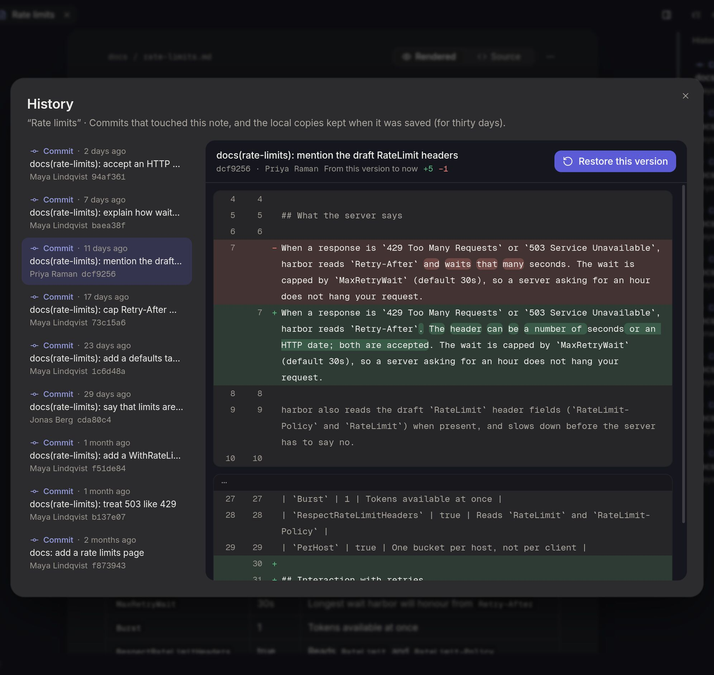
06History for one note: Git commits and local copies in one list, each with a diff from that version to now, and Restore this version.
06Safety
#Your Files Stay Yours
An editor that works on a folder other tools also touch has to be careful. Here is exactly how myOS Next saves, what it refuses to overwrite, and when it uses the network.
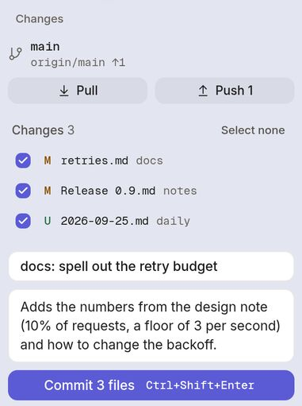
A folder of Markdown is shared ground. You edit it in myOS Next, in Vim, in Obsidian. A git pull rewrites half of it. A script appends to a log. Any editor that saves into that folder needs to know whether the file on disk is still the one it loaded. myOS Next is built around that question.
Saves that check first
Every note the app opens has a revision, taken from the file’s modification time and size. When you type, the app saves in the background against the revision it loaded. If the file on disk has a different revision, the save is refused. Nothing is written.
What happens next depends on whether you have unsaved edits. If you do not, the note reloads with the new text and the caret stays about where it was. If you do, a banner appears above the note: “This note changed on disk. Load the saved version, or keep your edits and save over it.” Two buttons follow, Load theirs and Keep mine. The app does not guess, merge, or pick the newer one. Nothing is overwritten until you choose.
The app recognizes its own saves by their revision, not by timing, so a save it just made does not trigger a false alarm. Task edits from lists carry the exact text of the line too, as the article on tasks describes, so a checkmark never lands on a line that has moved.
Byte-exact edits, untouched blocks
The rendered editor shows Markdown as formatted text: headings, lists, tables, code. Editors like this usually work by parsing the file into a tree and printing the tree back out as Markdown. That round trip is where formatting drifts. A table’s columns get realigned. * bullets become -. Blank lines change. A file you edited in one paragraph shows forty changed lines in git diff.
myOS Next keeps a map from each block in the editor to the exact source text it came from. When you save, blocks you did not touch are written back from that source, byte for byte. Only the block you edited is printed fresh. In Markdown source mode, the rule is simpler still: what you type is what is saved, and a file with Windows line endings keeps them.
The same care applies to frontmatter. Changing a property rewrites only that key’s lines. Key order, quoting, list style, and comments stay as they were. Frontmatter that is not valid YAML is left alone entirely; the text below it can still be edited.
Undo is exact as well. Undoing a file change, a task check, a capture, a move, or a delete puts back the bytes that were there.
Local copies
Before a save, the app keeps a copy of the file as it was. These copies live in the app’s data folder, never in your folder, under a subfolder for each open folder so two folders never mix. At most one copy is kept per file
every ten minutes during saves. Copies are also kept before a delete and before a restore. Each file keeps its last fifty, and none older than thirty days.
Copies follow a file when it is renamed or moved in the app. They are listed in the note’s History panel as “Local copy,” with the time, next to Git commits if the folder has any. Each entry shows what changed from that version to now, and Restore this version puts it back. Restoring is itself undoable, and the text it replaces becomes the newest local copy.
Deleting a folder takes a local copy of each note in it first, and moves the files to the system trash when there is one.
Git, when the folder has it
If the open folder is in a Git repository, the app uses the git binary you already have, run inside that folder.
Changes. The file list marks changed files with a dot. The Changes panel lists them with their diffs, and has a Summary field and an optional Description. Press ⌘⇧Enter to commit. Outside the panel, the same keys open it with the cursor in the Summary field. A commit can include all changes or only the files you select.
History. Each note has a History panel: the commits that touched it, newest first, each with its subject, author, and diff. Renames are followed, so a note’s history continues back past its old name. Restoring a file from a commit writes that commit’s bytes into the file, and the replaced text is kept as a local copy.
A folder inside a repository. Many developers keep notes in a repository’s docs/ folder. When that subfolder is what you open, the Changes panel shows only files inside it, and committing all changes includes only changes inside it. The rest of the repository is left alone.
No repository yet. Outside a repository, the Changes panel says “Not a Git repository” and offers git init in the open folder. It will not create a repository inside one that already exists.
Paths are passed to Git after -- as literal pathspecs, so a file named -rf.md is only ever a file name. Commit hashes are validated before use. Git’s own error messages are shown as Git wrote them.
Pull and Push, only on click
The Changes panel shows the branch and its upstream, and two buttons: Pull and Push, each with a count when the branch is behind or ahead. Pull runs git pull --rebase --autostash. Push runs git push. Each runs only when you click it, and the result is shown in one line.
Git runs with prompts turned off. If a remote needs a password the app cannot supply, the command fails with Git’s message instead of waiting for input nobody can see.
No network otherwise
That is the whole list. myOS Next uses the network for Git pull and push, when you click them, and for nothing else. It has no account, no sync service, no telemetry, and no bundled AI or model provider. It reads and writes only the folder you open, plus its own settings and local copies in its data folder.
Sync, if you want it, is whatever you already use for files: Git, a synced drive, or nothing at all. The app does not need to know.
07Keyboard
#Hands on the Keys
A practical tour of myOS Next from the keyboard: opening files, running commands, switching to source with Vim keys, and working in tabs and splits.
If you forget a key, ⌘K lists every command with its shortcut.
The product documentation asks for two things at once: that myOS Next “feel soft and unhurried to look at, and fast and precise to use from the keyboard.” This is a tour of the second half. Every key below was checked against the app’s source.
On Linux the app shows Ctrl where macOS shows ⌘. This article uses ⌘.
⌘P: open a file
⌘P opens the file switcher. Type part of a path or a title; matching is fuzzy, and recent files come first. Enter opens the file. ⌘Enter opens it to the side, in a split. In a large folder, it is usually quicker than the file list.
⌘K: do anything
⌘K opens the command bar, which lists every command with its shortcut, in groups: Recent, Go to, Note, Tasks, Git, and App. Typing also searches the text of your notes. If you forget a key, this is where to find it. Commands that have no key are here too; while a note is open, that includes “Show outline,” “Show backlinks,” and “Turn on Vim keys in source mode.” In the rendered editor with text selected, ⌘K makes a link instead.
Press ? when you are not typing to see a sheet of every shortcut.
⌘E: rendered or source
Each tab shows a note one of two ways. Rendered shows headings, lists, tables, code, and diagrams as formatted text, with / for blocks and [[ for links. Markdown source shows the file as it is, in monospace, with syntax highlighting. ⌘E switches the current tab between them, and the new view starts on the line your caret was on.
Source mode is a full CodeMirror editor. [[ suggests notes to link. Task checkboxes are clickable, and checking one writes the same one-line edit as anywhere else. ⌘F finds in the note in both modes.
Vim keys
Vim keys are off by default. Turn them on from ⌘K (“Turn on Vim keys in source mode”) or in Settings. They apply in source mode only; the rendered view keeps ordinary editing. Vim’s bindings are loaded
⌘. hides everything but the text. Escape brings it back.
ahead of the default keymap, so its keys win inside the editor.
The one exception is ⌘E itself. The app catches it before either editor sees it, so the mode switch works from any Vim state.
⌘\: tabs and splits
Notes open in tabs. A single click in the file list opens a note in a preview tab, which the next single click replaces. Double-clicking, or starting to type, keeps it. This keeps the tab bar from filling up as you browse.
⌘\ splits the window to the right, and pressing it again closes the split. Each side has its own tabs, and each can show a different screen: a note on the left and Today on the right, for example. ⌘1 through ⌘8 go to that tab in the focused side; ⌘9 goes to the last. Ctrl-Tab and Ctrl-Shift-Tab step through them. ⌘W closes the tab.
Tabs, the split, and which folders are expanded are remembered for each folder you open.
⌘B and ⌘.: making room
⌘B shows or hides the file column on the left. ⌥⌘B shows or hides the panel on the right, with Outline, Backlinks, Properties, Changes, and History. With both hidden, you see the note and the tabs.
One detail: in the rendered editor, the editor gets the first say, and ⌘B there makes the selected text bold. Press it with the focus outside the text, or use the command bar, to fold the files away.
⌘. goes further. Focus mode hides everything but the text. Escape leaves it, and so does a small “Exit focus” button, the one piece of the interface focus mode keeps.
⌘⇧Enter: commit
In a Git repository, ⌘⇧Enter opens the Changes panel with the cursor in the Summary field. Type a message and press ⌘⇧Enter again to commit. Two presses and a sentence, without touching the mouse.
⌘N and the rest
⌘N opens capture, which adds a line to today’s daily note. ⌥⌘N starts a new note in the folder selected in the file list. ⌘, opens Settings. Outside the text, ⌘Z undoes the last file change, whether it was a checked task, a capture, a move, or a delete; inside the text, it undoes typing as usual.
In the file list, the arrow keys move and open or close folders, Enter opens the file, F2 renames, and Delete deletes, with a local copy kept first.
In any task list, a focused row takes x to check it off, d and s to set the due or scheduled date, t to add a tag, and j and k to move.
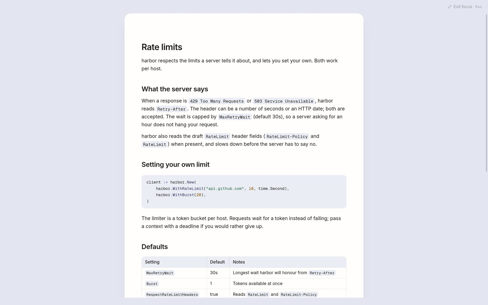
08Focus mode, light theme: the sheet on its tinted canvas, and a small Exit focus button in the top corner.
08Design
#A Sheet on a Tinted Table
The design of myOS Next, garment by garment: one raised page, two thin columns that fold away, a monospace for facts, and a lot of room left empty.
The window is the table. The note is the sheet laid on it.
Fashion editors talk about restraint as a choice you can see: the dress with no print, the room with one chair. The design of myOS Next makes the same kind of choice, and it can be described in exact terms. There are few pieces. Each one has a job. Nothing is there for decoration.
The sheet
The window itself is the canvas. It is a soft neutral with a small amount of the accent color mixed in: five percent in the light theme, six in the dark. On it sits one raised page, the sheet, where the note is. In the light theme the sheet is a warm near-white, #FFFEFC, with a shadow so faint it is closer to an edge than a shadow. In the dark theme the sheet is a slightly lighter charcoal than the canvas, and the separation comes mostly from tone.
The sheet is centered and only as wide as the text column plus 56 pixels of margin on each side. The text column has three widths, set in Settings under Editor → Line width: Narrow, Normal, and Wide, at 36, 42, and 52 rem. The design documentation lists “Use depth instead of lines” as a principle: surfaces are told apart by tone and soft shadow, and a hairline is a last resort.
The plan for the app describes the intended feel in one line: “The note sits on a slightly raised sheet in the middle of a tinted canvas, with wide margins.” The effect is closer to paper on a desk than to a document in a program.
The side columns
On the left is the file list: Today, Tasks, pinned views, and then the folder’s real folders and files. On the right is the panel: Outline, Backlinks, Properties, Changes, and History. Both columns are the same color as the canvas, so they sit on the window without a dividing line. There is no frame around them, only text and small icons.
They are thin. The file list starts at 248 pixels. Its rows are 28 pixels tall, the one place denser than the 36-pixel rows used in lists elsewhere, so that a project’s docs/ folder fits on screen. The right panel starts folded away. Both columns fold with a key, ⌘B and ⌥⌘B, and with both folded you see only the tabs and the text.
The active tab, the active place in the sidebar, and the open file are marked the same way: a small raised pill in the sheet’s color. The selected item looks like a piece of the page, which is what it is.
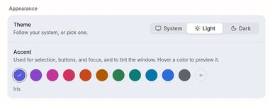
Mono for facts
The app uses three typefaces, all bundled.
Inter is the interface and the text, at a readable default of 14 pixels for the interface and 16 for the body of a note. Section labels are sentence case in a medium weight. The design rules say it plainly: “There are no uppercase monospace labels.”
Geist Mono is used for facts: file paths, the status bar, source mode, code, keyboard hints, and file names while you type them. The path of today’s daily note sits above it in small monospace. The query in a view block is shown in monospace. The status bar reads like a line of git status: the branch, a dot and a count of changed files, arrows for ahead and behind.
Literata is optional. When Settings → Editor → Reading font is set to Serif, the body of a note is set in it. The interface stays in Inter.
Color, and one accent
The palette is mostly warm neutrals. The design documentation describes them as “warm but clean, not cream paper.” There is one accent, chosen in Appearance; the default is Iris, #5B5BD6. Every other accent shade is mixed from that one value, so changing it changes everything together. The accent fill is the same in both themes, so white text on it always meets a 4.5:1 contrast ratio.
All text meets 4.5:1 contrast on every surface it can sit on, in both themes.
Light and dark
Both themes are first-class. Every color token has a light and a dark value, and the two are reviewed together. The dark theme is not an inversion: it relies more on surface tone than on shadow, and the sheet is set apart by being a step lighter than the canvas. Changes to the design are checked in both themes, at a narrow and a wide window.
Motion and shape
Motion is short. Hover and press take 120 milliseconds, popovers 200, dialogs 320. A slightly springy curve is kept for two moments only: checking a task and creating something. Nothing loops. When the system asks for reduced motion, movement is turned off and only fades remain.
Corners are measured, not decorative: 6 pixels for chips and checkboxes, 10 for controls and rows, 14 for cards, 20 for dialogs and the sheet. Spacing follows a 4-point grid. Icons are Lucide, with a 1.75 stroke, at 16 pixels in the interface.
What restraint means here
It would be easy to describe all this as minimal and leave it there. The more accurate word is edited. Each surface was asked what it is for. The sidebar is for finding files, so it shows files. The status bar is for state, so it shows state, in mono. The sheet is for the note, so it is the brightest thing in the window. Everything else is canvas.
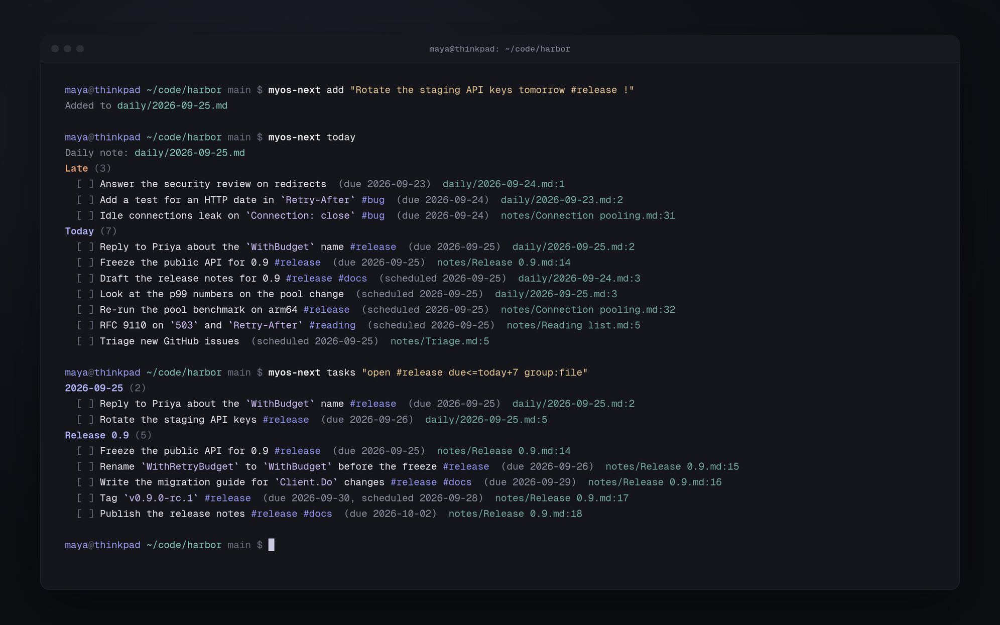
09add, today, and tasks in a terminal, on the folder the app has open.
09Terminal
#From the Prompt
The myos-next command reads and writes the same folder as the app, with no window. Here is what each subcommand does and what it prints.
The command and the app share one query engine and one capture parser. Nothing is translated between them.
Some people keep a terminal open all day and would rather not switch to another window to write down a task. For them, myOS Next installs a command, myos-next. On Linux, the local install links it into ~/.local/bin.
The command works on the folder the app last opened. add, today, tasks, and find run without starting a window, whether or not the app is running. If it is running, its file watcher picks up whatever the command wrote. If no folder has been chosen yet, the command says so: “No folder is open yet. Open myOS Next once to choose one.”
add
$ myos-next add "Bump the go.mod minimum to 1.22 tomorrow #release"
Added to daily/2026-09-25.md
add appends one line to today’s daily note, or to the capture file and heading chosen in Settings. The rules are the same as in the app’s capture field. Plain text becomes a list item. Text that starts with [ ], or has a date, a repeat, or !, becomes a task. The example above writes:
- [ ] Bump the go.mod minimum to 1.22 #release 📅 2026-09-26
With no text, add reads from standard input, so it can take the output of another command:
$ echo "Rotate the staging keys fri" | myos-next add
today
$ myos-next today
Daily note: daily/2026-09-25.md
Late (3)
[ ] Answer the security review on redirects (due 2026-09-23) daily/2026-09-24.md:1
[ ] Add a test for an HTTP date in `Retry-After` #bug (due 2026-09-24) daily/2026-09-23.md:2
[ ] Idle connections leak on `Connection: close` #bug (due 2026-09-24) notes/Connection pooling.md:31
Today (7)
[ ] Reply to Priya about the `WithBudget` name #release (due 2026-09-25) daily/2026-09-25.md:2
[ ] Freeze the public API for 0.9 #release (due 2026-09-25) notes/Release 0.9.md:14
[ ] Draft the release notes for 0.9 #release #docs (scheduled 2026-09-25) daily/2026-09-24.md:3
[ ] Look at the p99 numbers on the pool change (scheduled 2026-09-25) daily/2026-09-25.md:3
[ ] Re-run the pool benchmark on arm64 #release (scheduled 2026-09-25) notes/Connection pooling.md:32
[ ] RFC 9110 on `503` and `Retry-After` #reading (scheduled 2026-09-25) notes/Reading list.md:5
[ ] Triage new GitHub issues (scheduled 2026-09-25) notes/Triage.md:5
today prints the path of today’s daily note, with “(not written yet)” if the file does not exist, then two sections: late tasks, and tasks due, scheduled, or starting today. These are the same tasks the Today screen shows.
Each task line has the same shape everywhere in the command: the checkbox, the task’s text with its tags, its dates in parentheses, and path:line. The path is relative to the open folder, so from there vim +14 "notes/Release 0.9.md" goes straight to the line.
tasks
$ myos-next tasks "open #release group:file"
2026-09-24 (1)
[ ] Draft the release notes for 0.9 #release #docs (scheduled 2026-09-25) daily/2026-09-24.md:3
2026-09-25 (2)
[ ] Reply to Priya about the `WithBudget` name #release (due 2026-09-25) daily/2026-09-25.md:2
[ ] Bump the go.mod minimum to 1.22 #release (due 2026-09-26) daily/2026-09-25.md:5
Connection pooling (1)
[ ] Re-run the pool benchmark on arm64 #release (scheduled 2026-09-25) notes/Connection pooling.md:32
Release 0.9 (6)
[ ] Freeze the public API for 0.9 #release (due 2026-09-25) notes/Release 0.9.md:14
[ ] Rename `WithRetryBudget` to `WithBudget` before the freeze #release (due 2026-09-26) notes/Release 0.9.md:15
[ ] Write the migration guide for `Client.Do` changes #release #docs (due 2026-09-29) notes/Release 0.9.md:16
[ ] Tag `v0.9.0-rc.1` #release (due 2026-09-30, scheduled 2026-09-28) notes/Release 0.9.md:17
[ ] Publish the release notes #release #docs (due 2026-10-02) notes/Release 0.9.md:18
[ ] Announce on the mailing list #release (due 2026-10-03, starts 2026-10-02) notes/Release 0.9.md:19
tasks takes a view, in the same one-line language as the app, the sidebar, and fenced blocks. Without a query, it lists open tasks. When the query groups, each group is printed as a heading with its count; when grouping by file, the heading is the note’s title (its frontmatter title, or else its file name), and groups follow the order of their paths. A term the view cannot use is reported on standard error, and the rest of the query still runs.
find
$ myos-next find "rate limit"
Rate limits /home/maya/code/harbor/docs/rate-limits.md
2026-09-23 /home/maya/code/harbor/daily/2026-09-23.md
Reading list /home/maya/code/harbor/notes/Reading list.md
Retry budget /home/maya/code/harbor/notes/Retry budget.md
getting-started /home/maya/code/harbor/docs/getting-started.md
README /home/maya/code/harbor/README.md
find lists notes whose title or text contains every word, most recently changed first. Each line is the title, a tab, and the full path, which makes it easy to pass to cut, fzf, or an editor.
open
$ myos-next open notes/api.md
open shows a file in the app, starting it if needed. The path is read relative to the current directory first, so open ./api.md works from inside the folder, and otherwise as a path inside the open folder. --capture opens the capture field in the running window.
Exit codes
add and today return 0 on success; add with nothing to add returns 1. tasks and find return 0 when something matched and 1 when nothing did, so they can be used in a shell if. Errors go to standard error.
The Capabilities · Photographed in the light and dark themes
Section twoThe Capabilities
Eighteen things
it does, exactly.
One page for each. What it is, what it writes to your files, and the key or command that does it. Every picture is the app, in its light or dark theme, on a folder of notes for a small Go library called harbor.
- 01Folder
- 02Notes & links
- 03Tasks as lines
- 04Today
- 05Tasks screen
- 06Views
- 07View blocks
- 08Capture
- 09Source & Vim
- 10Properties
- 11Backlinks
- 12Switcher & command bar
- 13Split & tabs
- 14Git changes
- 15History
- 16Conflicts & safety
- 17Focus
- 18Terminal
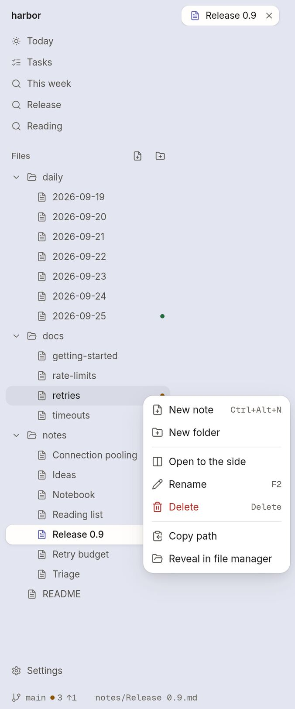
01Folder
The folder, as it is
The sidebar shows the real folders and files on disk. Nothing is moved into a structure of the app’s own.
Open any folder: a vault, a repository’s docs/, a directory of meeting notes. The file list shows its folders and .md files exactly as they are, empty folders included. Dot folders such as .git and .obsidian are left out, and so is node_modules.
A single click opens a note in a preview tab, set in italics, which the next click replaces. Double-click the note, or start typing in it, and the tab stays. Drag a row onto a folder to move it. Each file’s menu can make a note or folder beside it, open it to the side, rename, delete, or copy its path.
Changes made anywhere else, in a terminal, in another editor, or by git pull, show up in the list as the watcher sees them. In a Git repository, a small dot marks each changed file. Deleting keeps a local copy first and uses the system trash when there is one.
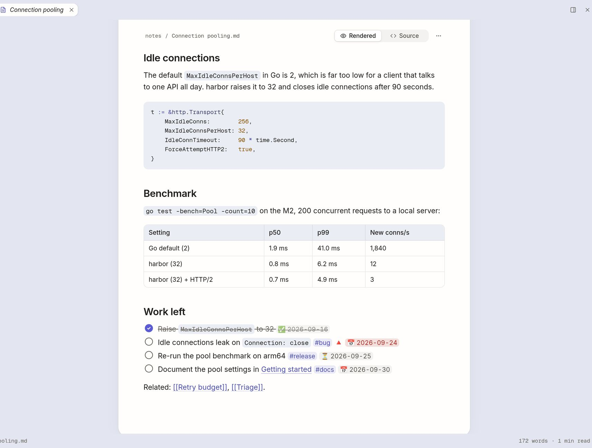
02Notes & links
Any file is a note
A note is any Markdown file in the folder. A link is two square brackets.
There is no note type and no required field. Any .md file in the folder is a note, and its title is its frontmatter title or, without one, its file name.
Each tab shows a note rendered, with headings, lists, tables, code, and diagrams set as formatted text, or as Markdown source. Type / for a menu of blocks. Type [[ and the app suggests notes to link; the last suggestion creates a new one.
Links resolve by path, then file name, then title, ignoring case, so [[Retry budget]], [[retry budget]], and [[notes/Retry budget]] all reach the same file. Ordinary Markdown links to .md files work too, read from the linking note’s folder. Clicking a link to a note that does not exist creates it next to the note you are in, and opens it.
When you edit one paragraph, only that paragraph is written again. Tables keep their spacing, lists keep their markers, and the rest of the file is saved byte for byte.
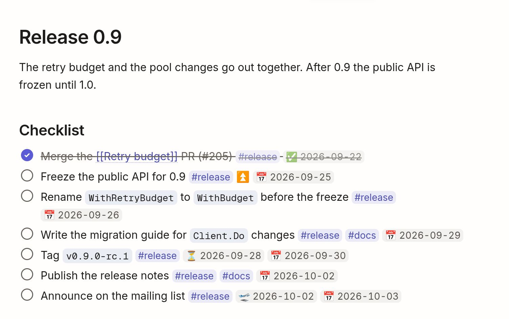
03Tasks as lines
A task is a line
A checkbox line in any note is a task. Every change the app makes to it is an edit to that one line.
Write - [ ] Freeze the public API for 0.9 #release 📅 2026-09-25 anywhere: a project note, a meeting note, today’s daily note. It is a task. The dates use the Obsidian Tasks syntax: 📅 due, ⏳ scheduled, 🛫 start, ✅ done, and 🔁 for a repeat. A plain due:2026-09-25 works as well.
Checking a task off writes [x] and ✅ with today’s date at the end of the line. Unchecking removes both. Checking a repeating task leaves the done line as a record and writes the next occurrence directly above it, with its dates moved forward. Setting a date changes the token that is already there, or adds one.
Every edit carries the exact text of the line as the app last read it. If the file changed since, the edit is refused and nothing is written. Undo in the confirmation puts the file back exactly. Files with type: todo in their frontmatter count as tasks too.
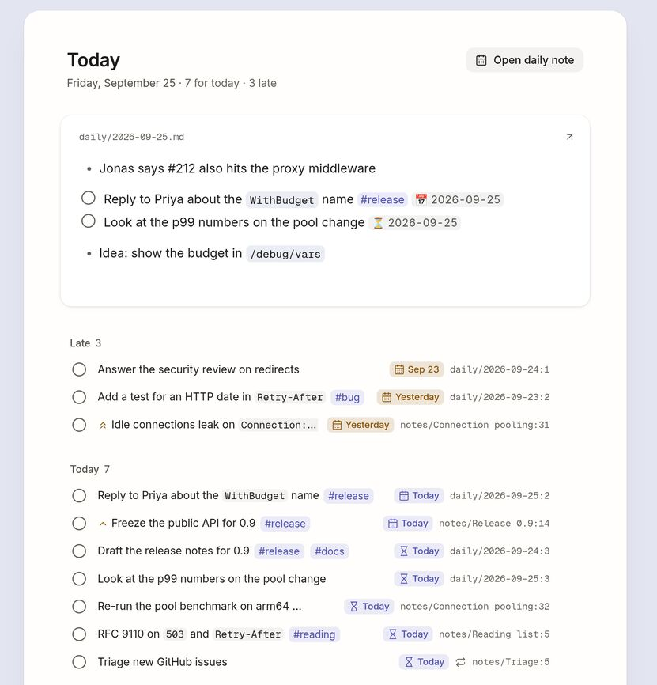
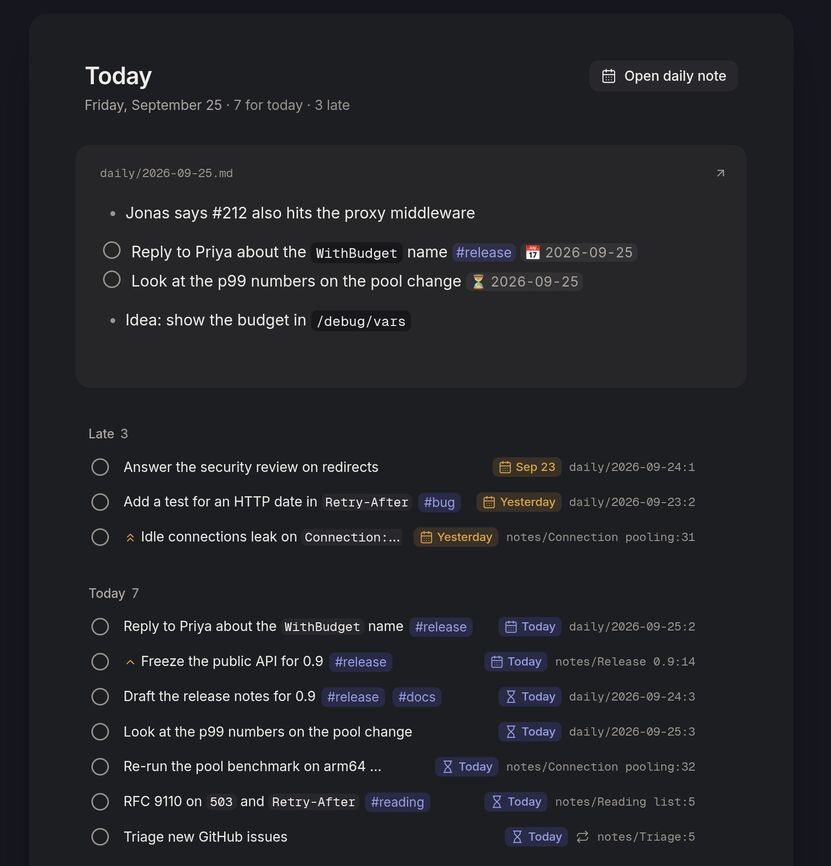
04Today
One page for the day
Today’s daily note on top. Below it, what is late and what is due, from the whole folder.
Today opens with the date and a short count, such as “7 for today · 3 late”. The daily note sits beneath it, editable in place, with a button to open it in its own tab. The note does not exist on disk until you write in it.
Below the note are two lists. Late holds open tasks whose due date has passed. Today holds tasks due today, scheduled for today or earlier, or starting today. A folded Done today list keeps what you have finished. Each row shows its dates as small chips and, in monospace, the file and line it lives on.
Checking a task off here writes to that task’s own file, which may be a meeting note from last week. When nothing is due, the screen says so, “Nothing is due today”, and offers a button to capture a task.
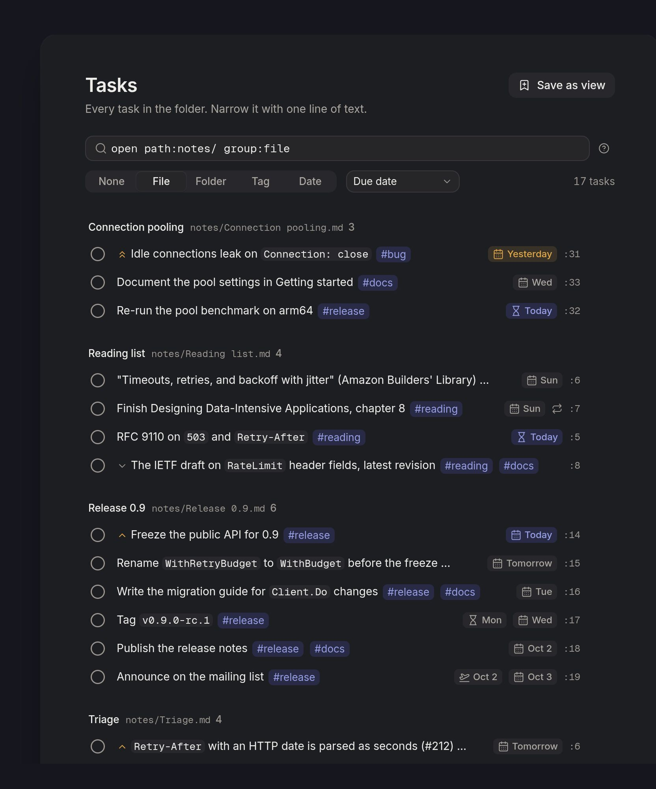
05 · Tasks screen
05Tasks screen
Every task, one query
A list of every open task in the folder, narrowed by a line of text you type.
The Tasks screen begins with the query open: every open task in every note. Type in the query bar to narrow it. open path:notes/ group:file shows the tasks in notes/, grouped under each note’s title. The buttons below the bar group by file, folder, tag, or date and sort by due date, priority, or file, and they write the same terms into the query.
Each result is a task row. Check it off, set its due or scheduled date from its menu, add a tag, or open the note at that line. The keys follow the list: j and k move, x checks, Enter opens the note with the line lit up for a moment, and ⌘Enter opens it to the side.
When a query is worth keeping, Save as view asks for a name and pins it to the sidebar. It is stored in the app’s settings, so no file in your folder changes.
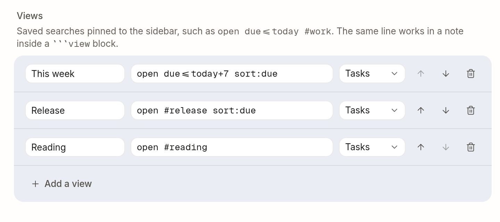
06Views
A search, written down
A view is one line of query text. It runs on the Tasks screen, in the sidebar, inside a note, and at the terminal.
The language is small enough to print on one popover. open and done pick a status; overdue finds what is late. Dates compare with <, <=, =, >=, and > against today, tomorrow, yesterday, an offset such as today+7, or a date. #tag and -#tag include or leave out a tag, nested tags included. path:docs/ and file:api pick places. Other words search the text.
Terms combine with AND. There are no parentheses and no OR. sort:, group:, and limit: shape the result.
A saved view has a name and sits in the sidebar, below Today and Tasks. Its screen has a button to copy it as a block for a note, and Remove, which offers Undo. When a term cannot be used, the view keeps running and says in one sentence what it left out, and why.
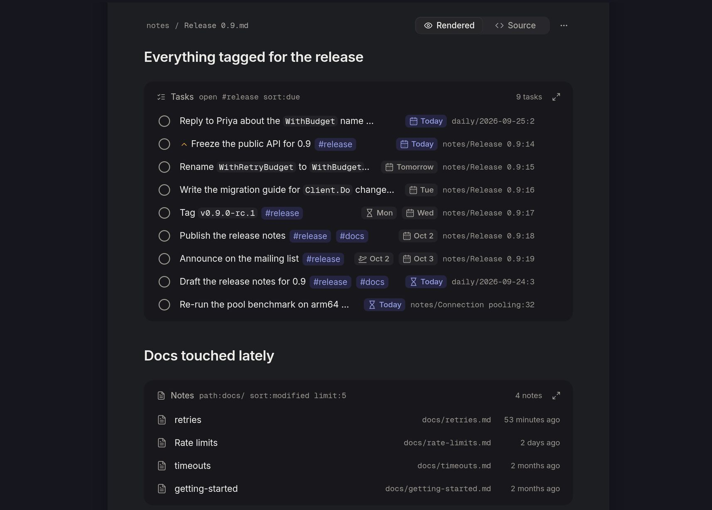
07View blocks
The note holds the question
A fenced view block in any note shows live results, and stays plain text on disk.
Put a query inside a code fence named view, on the first line or on the lines inside. The block lists tasks, or notes when the query includes kind:notes:
```view
open #release sort:due
```
In myOS Next the block becomes a small live list. Its header shows the query in monospace and a count, and Open as view opens it on its own screen. Checking a task in the block writes to that task’s own file, not to the note the block sits in. Results update as files change.
Inside a block, path:. means the note’s own folder and file:this means the note itself, so a project page keeps working after its folder is renamed.
In any other editor the block is three lines of text in a code fence. Nothing is hidden, and no results are copied into the file.
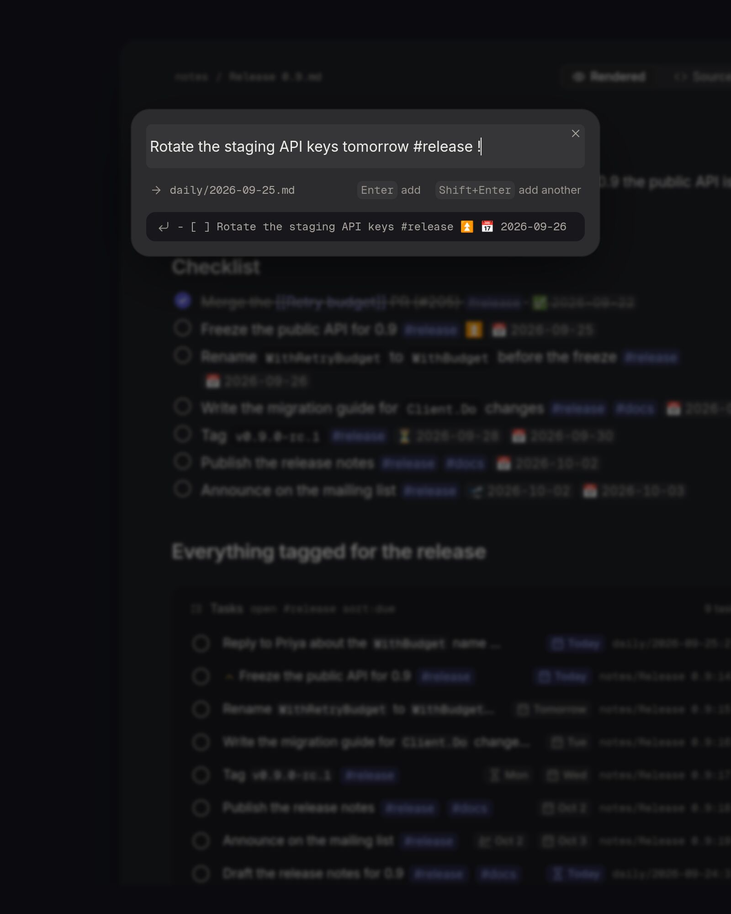
08 · Capture
08Capture
One line, from anywhere
⌘N opens a single field. Enter writes one line to today’s daily note.
Capture is for the thing you will forget in a minute. Press ⌘N from anywhere in the app and type. Under the field, the app shows the file the line will go to and, in monospace, the exact line it will write, before anything is written.
Plain text becomes a list item. Text that starts with [ ], or has a date, a repeat, or !, becomes a task. Dates can be words: “tomorrow”, “fri”, “in 3 days”, “next week”. The word that introduced a date is removed with it, so “Dentist on friday” becomes - [ ] Dentist 📅 2026-10-02.
Enter adds the line and closes the field. Shift-Enter adds it and keeps the field open for the next. A confirmation names the file, with Undo.
In Settings, captures can go to any .md file instead of the daily note, and under a heading such as “Log”, which is added when the file does not have it.
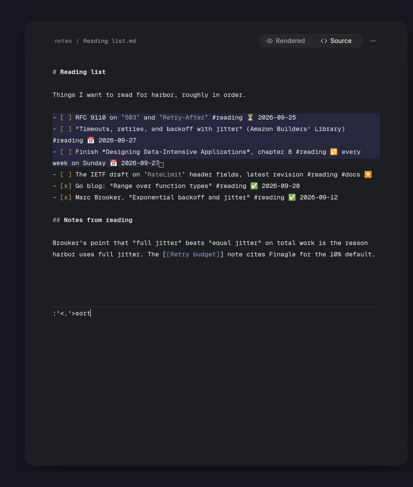
09 · Source & Vim
09Source & Vim
The file, as it is typed
Any tab can show the Markdown source in monospace, with Vim keys if you want them.
⌘E switches the current tab between the rendered note and its Markdown source, and the new view opens on the line your caret was on. Source mode is a CodeMirror editor in Geist Mono with syntax highlighting. What you type is what is saved, and a file with Windows line endings keeps them.
Source mode keeps the conveniences that matter. [[ suggests notes to link. Task checkboxes can be clicked, and checking one writes the same one-line edit as anywhere else. ⌘F finds in the note.
Vim keys are off by default. Turn them on in Settings, under Editor, or from the command bar with “Turn on Vim keys in source mode”. They apply in source mode only; the rendered view keeps ordinary editing. Inside the editor, Vim’s keys come first. ⌘E is caught before either editor sees it, so the mode switch works from any Vim state.
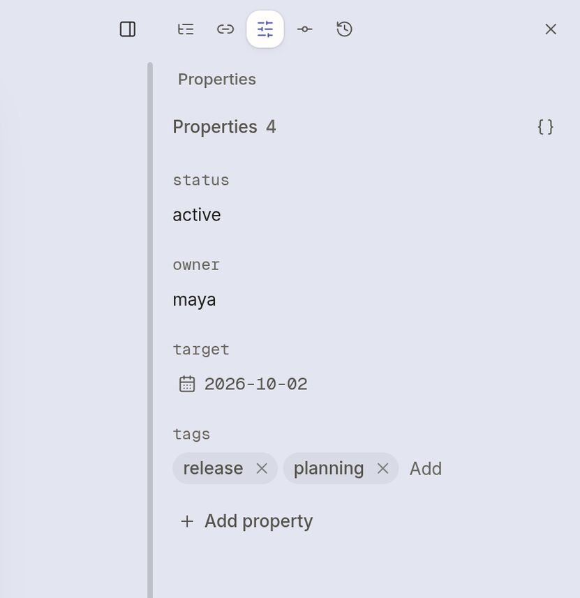
10Properties
Frontmatter, key by key
When a note has YAML frontmatter, every key is an editable property. Only the key you change is rewritten.
Frontmatter is optional. When a note has it, the Properties panel on the right lists every key: text, dates, lists, whatever was there. Edit a value in place, or choose Add property for a new name and value. With no frontmatter at all, the panel offers to start a block.
The rewrite is narrow. Changing one property touches only that key’s lines. Key order, quoting, list style, and comments stay as they were. A list written one item per line is changed item by item; a list written [a, b] stays on one line. Dates are written unquoted. Removing the last property removes the block.
For larger changes, Edit as YAML shows the block as text, and still rewrites only the properties you change. Frontmatter that is not valid YAML is left alone; the note below it can still be edited.
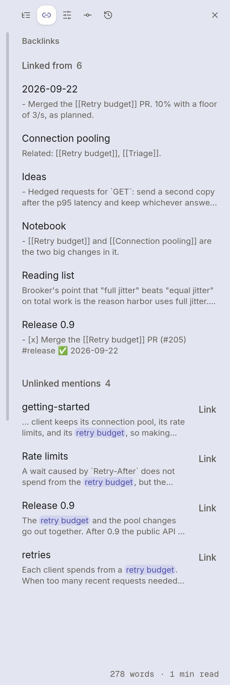
11Backlinks
Who mentions this note
The panel lists the notes that link here, and the ones that name it without a link.
Backlinks sit in the right panel, in two parts. Linked from lists every note with a link to this one, by [[wikilink]] or ordinary Markdown link, with the line that holds it. Click an entry to go there.
Unlinked mentions lists notes that use this note’s title in plain text, with no link. Each one has a Link button, which turns that mention into a [[link]]. The change is one edit to one line in the other file, and it can be undone like any other.
The panel reads the whole folder, so it finds links in daily notes, meeting notes, and old files you have not opened in months. Nothing is stored in the folder to make this work: backlinks are worked out from the text of the notes themselves.
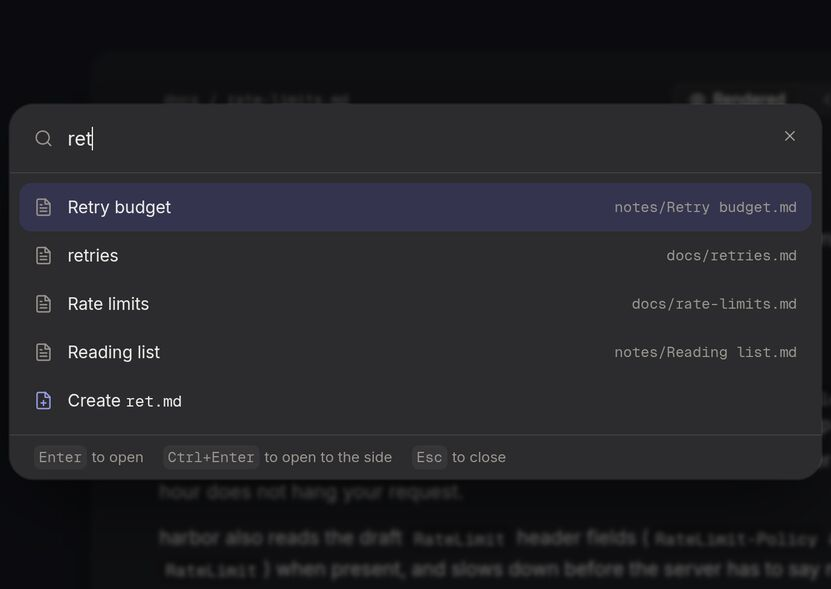
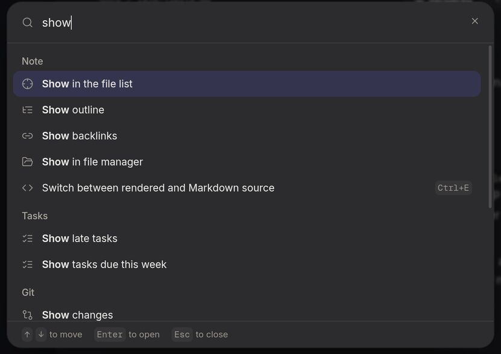
12Switcher & command bar
Two boxes for everything
⌘P opens a file. ⌘K runs a command. Both take a few letters and Enter.
The file switcher, ⌘P, searches paths and titles with fuzzy matching, recent files first. Enter opens the file; ⌘Enter opens it in a split to the side. When no file matches the path you typed, the last row offers to create it.
The command bar, ⌘K, lists every command in the app, grouped into Recent, Go to, Note, Tasks, Git, and App, each with its key where it has one. This is where to look when you forget a shortcut. It also searches the text of your notes, so it doubles as a quick find across the folder.
Neither box is a mode. Escape closes them, and nothing has changed. Press ? anywhere outside the text to see a sheet of every key.
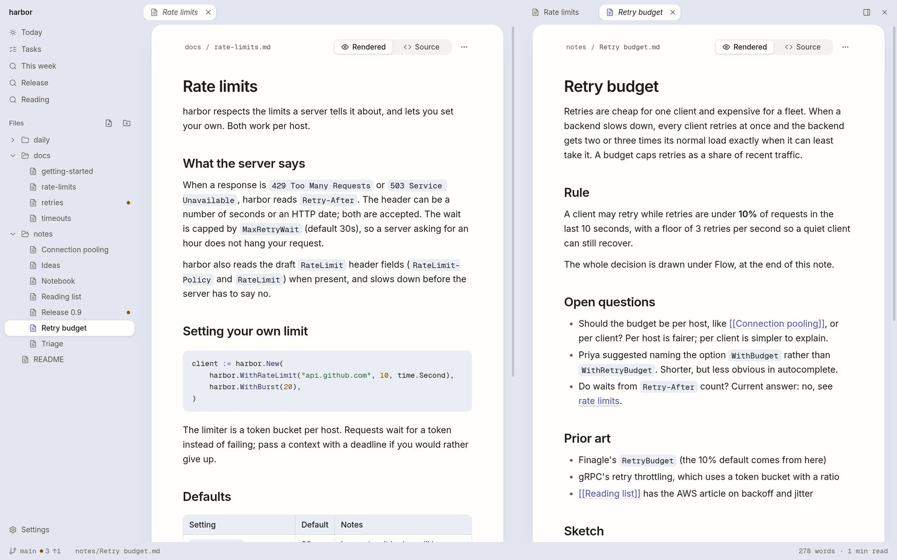
13Split & tabs
Two notes, side by side
Notes open in tabs. One key splits the window, and each side keeps its own.
Every note, screen, and view opens in a tab. A single click in the file list opens a preview tab that the next click replaces, so browsing does not fill the tab bar. Double-click, or start typing, and the tab stays.
⌘\ splits the window to the right, and pressing it again goes back to one. Each side has its own tabs and can show any screen: a note on the left and Today on the right, or two notes you are comparing. Drag the line between them to share the width.
⌘1 to ⌘8 go to a tab in the side you are working in, and ⌘9 goes to the last. Ctrl-Tab and Ctrl-Shift-Tab step through them. ⌘W closes a tab. Tabs, the split, and which folders are open in the file list are remembered for each folder, so they come back the next time you open it.
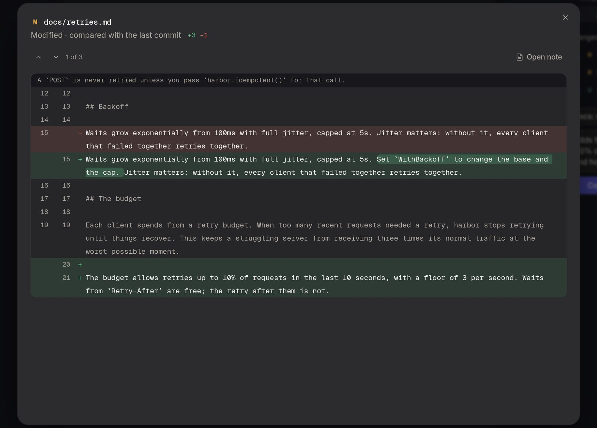
14Git changes
Commit from the panel
In a Git repository, the app shows what changed and commits it with a message. Pull and Push run only when you click.
If the open folder is in a Git repository, the app uses the git you already have. Changed files carry a dot in the file list. The Changes panel lists them with checkboxes, above a Summary field and an optional Description. Click a file to see its diff against the last commit.
⌘⇧Enter opens the panel with the cursor in Summary; type a sentence and press it again to commit the selected files. When the open folder is a subfolder of a repository, such as a project’s docs/, the panel lists only files inside it and leaves the rest alone.
The panel shows the branch and its upstream, with Pull and Push and a count when you are behind or ahead. Pull runs git pull --rebase --autostash; Push runs git push. Git runs without prompts, and its errors are shown as Git wrote them. Outside a repository, the panel offers to initialize one.
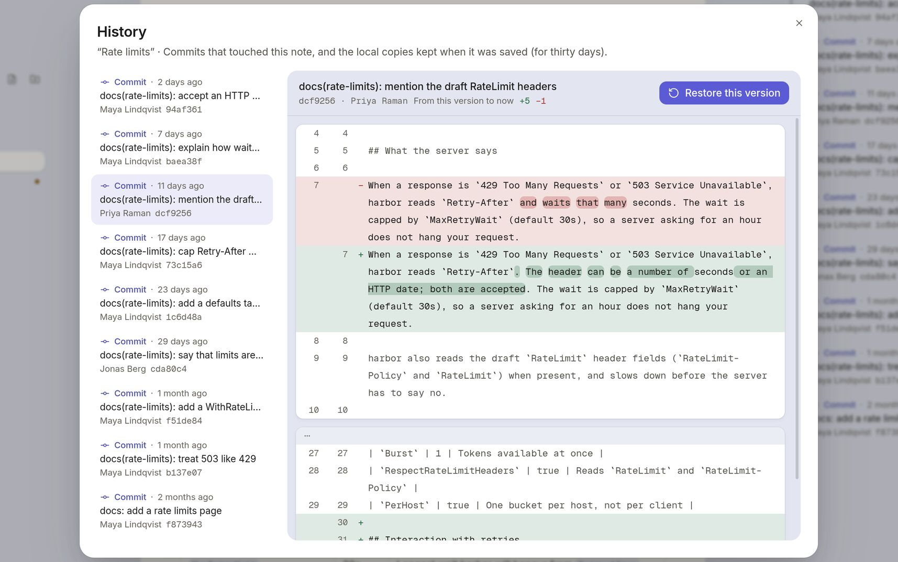
15History
Every version of a note
One list per note: the Git commits that touched it and the local copies the app kept, each with a diff and a restore.
The History panel lists a note’s past, newest first. Commit rows give the subject, author, and short hash; renames are followed, so the list continues past a note’s old name. Local copy rows are the copies the app keeps in its own data folder before saves, at most one every ten minutes, the last fifty for thirty days. A folder without Git still has local copies.
Click any entry for the History window. It shows what changed from that version to now, and Restore this version writes it back. The text it replaces becomes the newest local copy, and the confirmation offers Undo.
Local copies are kept outside your folder, under a separate subfolder for each folder you open. They never appear in git status and never travel with a sync service.
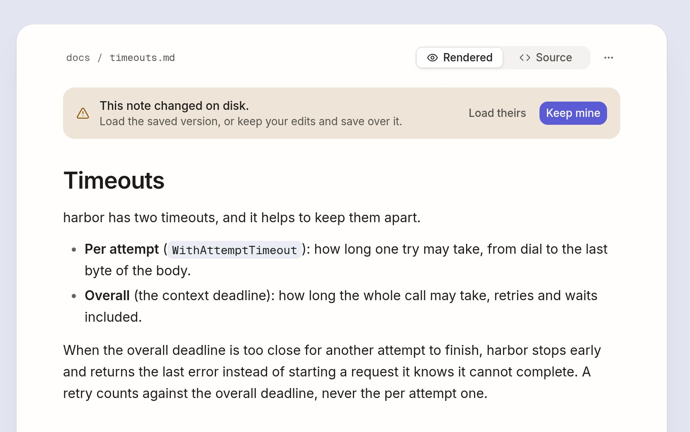
16Conflicts & safety
Nothing overwritten by surprise
Every save checks that the file on disk is still the one the app loaded. When it is not, you choose.
Each open note has a revision, taken from the file’s size and modification time. The app saves against that revision. If the file changed on disk in the meantime, through another editor, a script, or a git pull, the save is refused and nothing is written.
With no unsaved edits, the note simply reloads. With unsaved edits, a banner appears above the note: “This note changed on disk. Load the saved version, or keep your edits and save over it.” Load theirs takes the file on disk. Keep mine saves your text over it. The app does not merge and does not guess.
The same care runs through everything else. Task edits check the exact text of their line. Undo puts back the exact bytes. Unchanged blocks are saved as they were typed. The network is used only when you click Pull or Push.
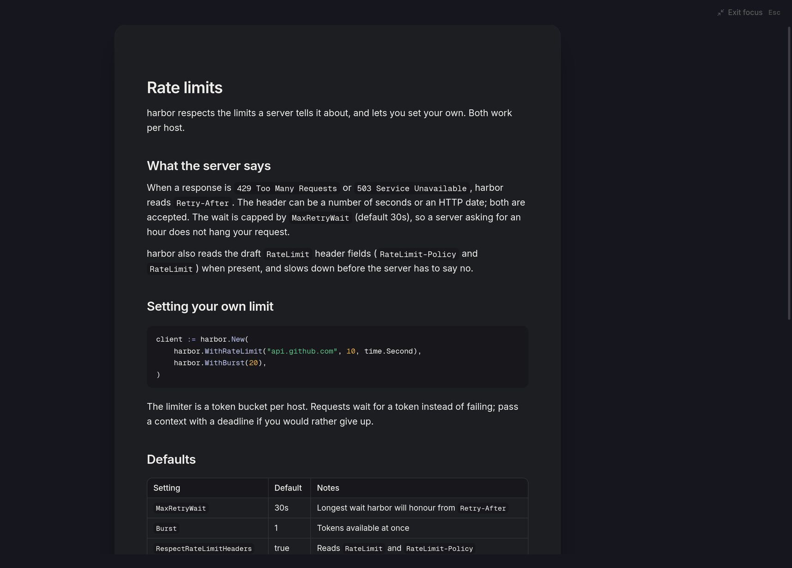
17Focus
Only the text
Focus mode hides everything but the note, on its sheet, on the canvas.
⌘. hides the file list, the tabs, the right panel, and the status bar. What is left is the note on its raised sheet, in the middle of the tinted canvas, and one small Exit focus button in the corner. Move the pointer to the top of the window and the tab bar comes back while you need it.
Writing works as it does anywhere else: rendered or source, links, blocks, tasks, and saves that check first. Commands that need a panel, such as committing with ⌘⇧Enter, leave focus mode on their own.
For a lighter version, fold only the sides. ⌘B hides the file list and ⌥⌘B hides the right panel. With both folded you have the tabs and the text. The widths of the text column, Narrow, Normal, and Wide, are in Settings under Editor.
18 · Terminal
18Terminal
The same folder, from a prompt
The myos-next command captures, lists, and finds in the folder the app has open, without opening a window.
myos-next add appends one line to today’s daily note with the same rules as the capture field, and prints where it went. With no text, it reads standard input, so other tools can pipe into it.
myos-next today prints the daily note’s path, then the late tasks and today’s tasks. myos-next tasks takes a view in the same one-line language as the app, including group: and kind:notes. Each task prints as its checkbox, text, dates, and path:line, so an editor can jump straight to it. myos-next find lists matching notes as title, a tab, and the full path, ready for cut or fzf. myos-next open shows a file in the app.
tasks and find return 1 when nothing matched, for use in a shell if. If the app is running, its watcher picks up whatever the command wrote.
Quick reference⌘ is Ctrl on Linux
## Keep this page open
Keys
| ⌘P | Open a file · ⌘Enter opens it to the side |
| ⌘K | Commands |
| ⌘N | Capture a line |
| ⌥⌘N | New note in this folder |
| ⌘E | Rendered or Markdown source |
| ⌘F | Find in note |
| ⌘\ | Split to the right, or back to one |
| ⌘1 – ⌘8 · ⌘9 | Go to tab · the last tab |
| ⌘W | Close tab |
| ⌘B · ⌥⌘B | Files · right panel |
| ⌘. | Focus mode · Esc leaves it |
| ⌘⇧Enter | Open Changes, then commit |
| ⌘Z · ⌘⇧Z | Undo · redo a file change |
| ⌘, | Settings |
? | Every shortcut |
In a task list
x or Space | Check off |
d · s | Due · scheduled date |
t | Add a tag |
j · k | Next · previous row |
| Enter · ⌘Enter | Open at the line · to the side |
Terminal
myos-next add "…" | Add a line to today’s note |
myos-next today | Late and today’s tasks |
myos-next tasks "open #x" | Tasks for a view |
myos-next find words | Notes: title, tab, path |
myos-next open path | Show a file in the app |
A task line
- [ ] · [x] · [-] | Open · done · cancelled |
📅 2026-10-02 | Due, or due:2026-10-02 |
⏳ 2026-09-30 | Scheduled |
🛫 2026-09-28 | Start |
✅ 2026-09-29 | Done on; written when checked |
🔁 every week | Repeats; when done counts from completion |
🔺 ⏫ 🔼 🔽 ⏬ | Priority, highest to lowest |
#work/api | Tag; #work finds it too |
A view block
```view | Query on the first line, or on the lines inside |
```view kind:notes | Lists notes instead of tasks |
A view, one line
open · done · overdue | Status |
due<=today | Also scheduled, start, done; < <= = >= > |
today+7 · 2026-10-01 | Dates: today, tomorrow, yesterday, offsets |
due=none | No due date |
#tag · -#tag | With or without a tag |
path:docs/ · file:api | Folder prefix · name contains |
path:. · file:this | In a block: this note’s folder · this note |
parser · "rate limit" | Words or a phrase |
sort:due · priority · file | Task order; notes: file, title, modified |
group:file · folder · tag · date | Sections |
limit:20 | At most this many |
kind:notes | In a view block: list notes |
```view
open due<=today+7 #release group:date
```> Empty states say what to do next in one sentence.
From the product model, on writing
ColophonIssue 04 · Winter 2026
Set in three faces,
written in one format.
Typefaces
Instrument Serif for headlines, by Rodrigo Fuenzalida and Jordan Egstad.
Source Serif 4 for text, by Frank Grießhammer for Adobe.
Geist Mono and Geist for numerals, labels, and anything literal, by Vercel. Geist Mono is also the monospace of myOS Next.
Method
Every article and capability page is a Markdown file. A Node script renders them with marked, pours the text into pages in headless Chromium, and prints the PDF. The pictures are cropped with ImageMagick around a rectangle that must stay whole, so no dialog, popover, or button is cut.
Photography
Screenshots of myOS Next at 3200 × 2000, in the light and dark themes, on a folder of notes for an example library, harbor.
Sources
The product model, the file format, the build plan, the architecture overview, and the app’s source. Shortcuts and interface wording were checked against the code.
Rebuild
node docs/magazine/build.mjs
Made by
The myOS Editors. No account, no telemetry, no bundled AI.
Aa
Instrument Serif · headlines
Aa
Source Serif 4 · text
Aa
Geist · labels
{ }
Geist Mono · anything literal
$ ls docs/magazine
articles/ capabilities/ issue/ build.mjs README.md~/Notes $ ls
daily/ docs/ notes/ README.md
~/Notes $ myos-next add "Read it again in ten years"
Added to daily/2026-12-01.md
~/Notes $ The app is a way
of looking at the folder.
The folder is still the thing.
myOS Next
A quiet editor for any folder of Markdown files. macOS and Linux.
No account. No sync service. No telemetry. No bundled AI.
Issue 04 · Winter 2026 · The Plain Text Issue